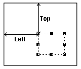
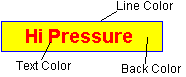
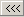
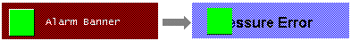
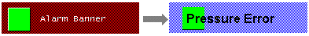

|
|
|
|
|
|
|
|
Create an alarm group. For more information, see Section 16.3.1.1, Creating Alarm and Event Groups.
In the Variable node, double-click the variable that is used for the alarm banner. In the Variable Properties dialog box, select the Alarm tab and the Alarm check box.
Click the Toolchest icon in the menu bar to open the Toolchest window, and select the Diagnostic folder.
Move the alarm banner part onto the panel using the drag and drop operation.
Right-click the Alarm Banner object and select Properties to display the Local alarm banner properties in the Property Inspector. Edit the properties as required.
|
Property |
Description |
|
Name |
The alarm banner's name. Whenever an alarm banner is created, a default name is generated. When renaming an alarm banner, its name must be unique within the target, must contain no more than 32 valid characters, and must follow the naming conventions. For more information, see Appendix 9, Naming Conventions. |
|
Top |
The coordinates, in pixels, of the top-left corner of the object.
By changing these properties, the graphical object can be moved up, down, left, and right.  |
|
Left |
|
|
Width |
The width of the object can be set from 20 to 3000 pixels, and the height from 10 to 3000 pixels. |
|
Height |
|
|
Back Color |
Specify the Alarm Banner's Back, Text, and Line colors.  |
|
Text Color |
|
|
Line Color |
|
|
Font |
Click the Font ellipsis button to display the Font Editor dialog box where you can define the Language, Font, Font Style, and Font size of alarm banner messages. |
|
Display Message |
Select one of these options to determine how the message will be displayed for an alarm:
|
|
Alarm Group |
Select the alarm group or alarm category whose alarm messages are displayed in the alarm banner. |
|
Scroll Rate |
Banner alarm messages can scroll across the panel using one of three speeds: Fast: 200ms Medium: 400ms Slow: 800ms |
|
Restore Defaults |
Click  to restore the Alarm Banner default settings. |

When you want to display an object, such as a switch or alarm, behind an alarm banner, you can use Bring to Front or Send to Back icons in the Arrange toolbar.
When the local alarm banner is at the back, it appears behind objects at run time.

When the local alarm banner is in the front, it appears in front of objects.
